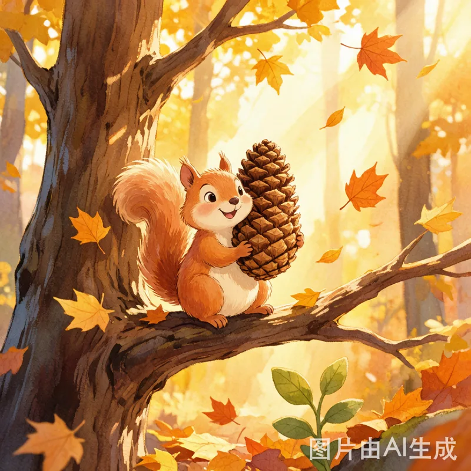
一个关于友谊与互助的故事
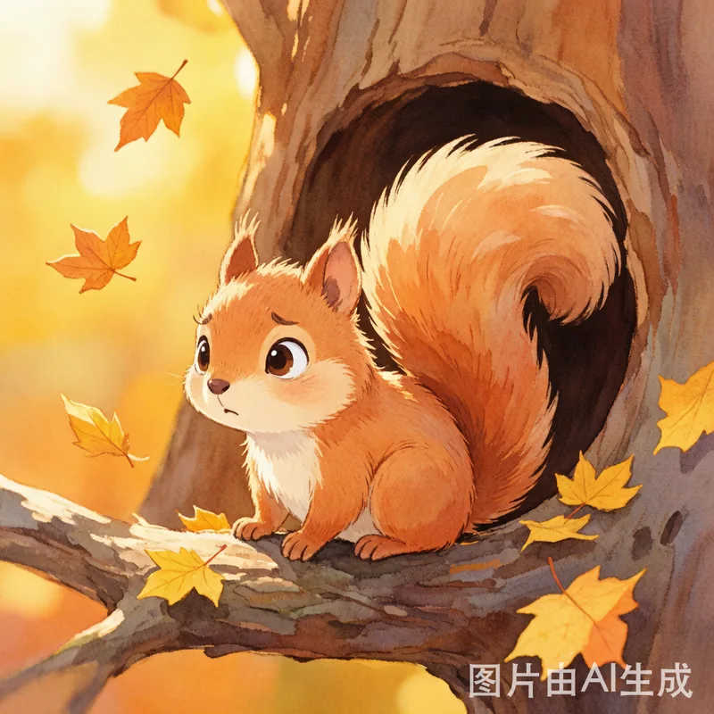
秋天的森林里，到处飘着金黄的落叶。小松果站在自己那棵高大的橡树上，抱着一颗比自己脑袋还大的松果，叹了口气。
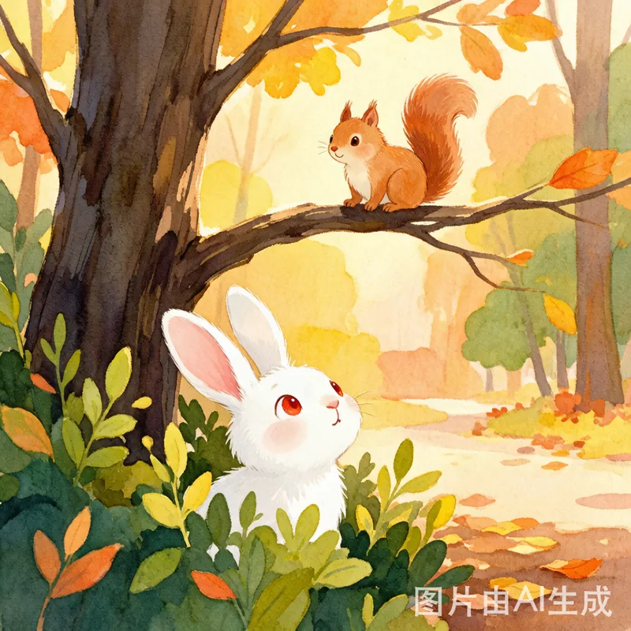
"松果松果，你怎么啦？"小兔子跳跳从灌木丛里探出头来。
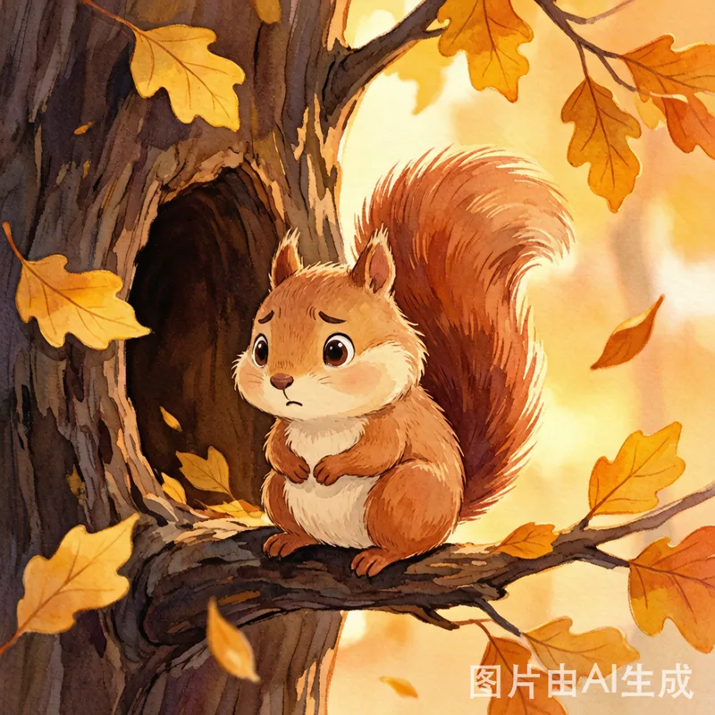
"冬天快到了，"小松果耷拉着尾巴，"大家都在忙着收集食物，可我的树洞里……只够吃一半冬天的。"
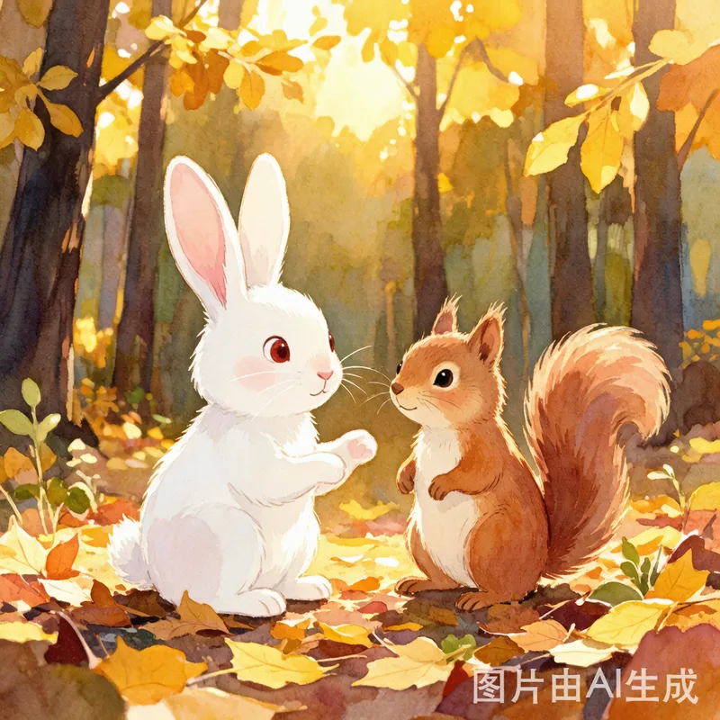
跳跳眨眨红红的眼睛："那我们帮你呀！"
"不行不行，"小松果摇着脑袋，"每个小动物都有自己的树洞要填，我不能麻烦你们。"
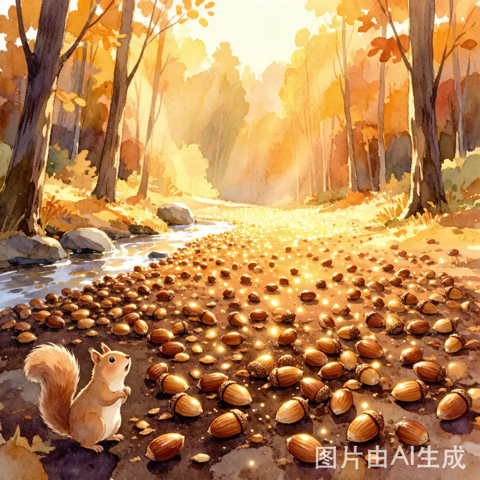
小松果决定自己去更远的地方找食物。
他跳过小溪，爬上峭壁，终于在一个秘密的山谷里发现了漫山遍野的坚果——多得像天上的星星！
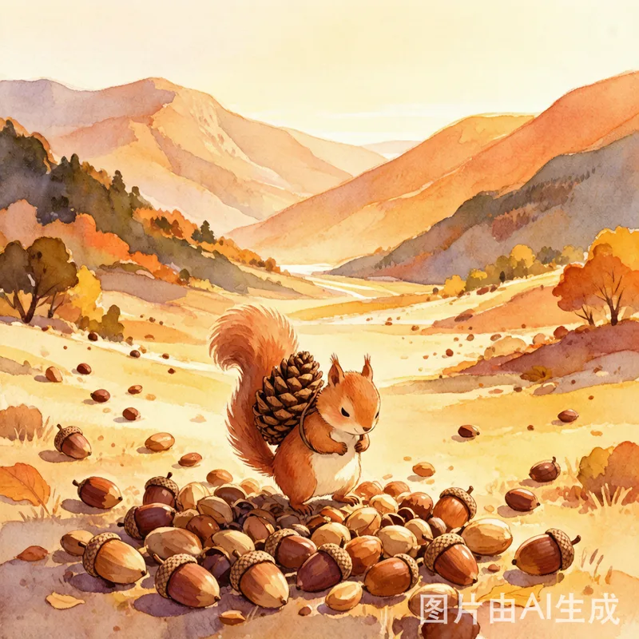
可问题是……他一次只能搬走一颗松果。
照这个速度，搬完这些得搬到明年春天去。
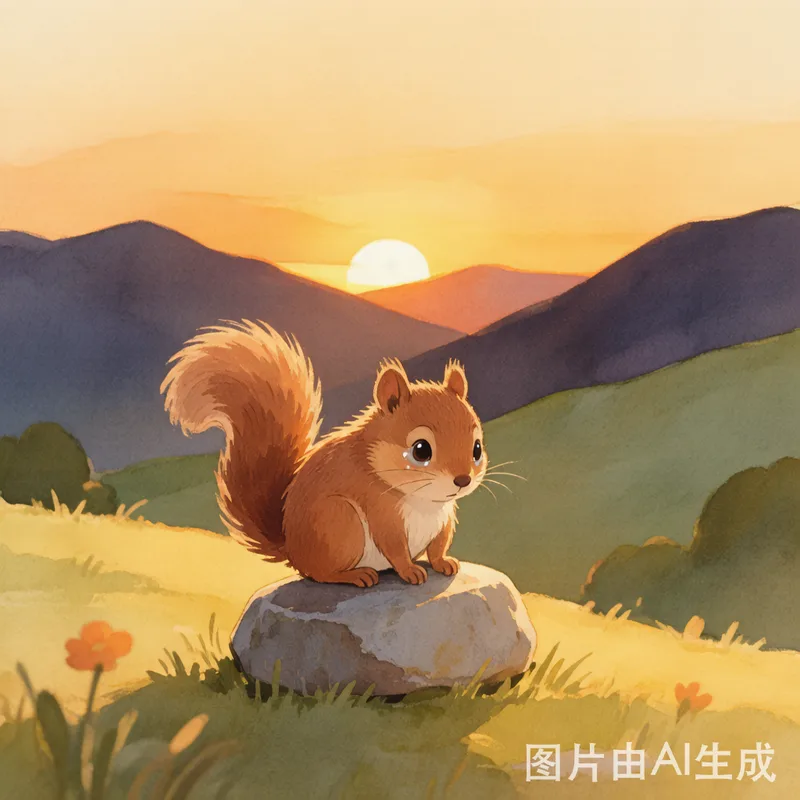
太阳慢慢落到山背后，小松果坐在谷底的石头上，又累又饿，鼻子一酸，眼泪差点掉下来。
"需要帮忙吗？"一个小小的声音从头顶传来。
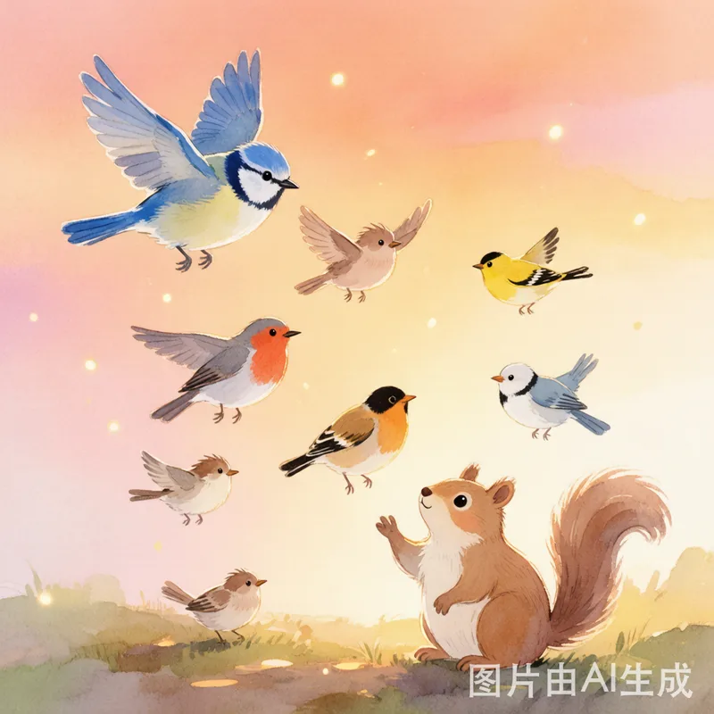
小松果抬头一看，是一只穿着蓝色羽毛外套的小山雀，身后还跟着一群五颜六色的小伙伴——有红胸脯的知更鸟、黄灿灿的金翅雀，甚至还有几只胖乎乎的麻雀。
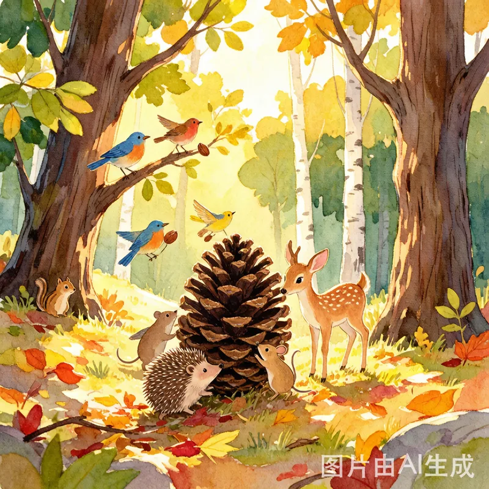
"跳跳告诉我们你在这里，"小山雀笑着说，"森林里的消息传得可快了。"
还没等小松果说谢谢，小鸟们就开始忙碌起来：有的用嘴叼小坚果，有的成群结队把大松果推上斜坡，还有的飞回去喊来了更多的朋友——小刺猬、小田鼠，甚至平时有点害羞的小鹿都来了。
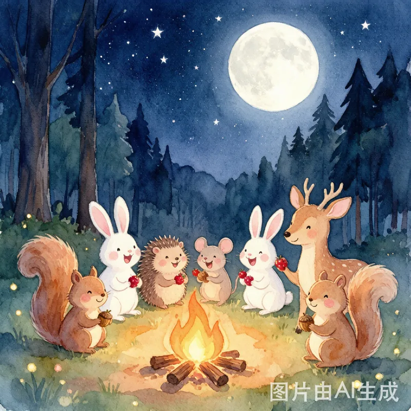
月亮升起来的时候，山谷里的坚果已经搬回了森林，每个小动物的仓库都装得满满的。
大家围坐在篝火旁，分享着橡果和浆果，笑声传遍了整片森林。
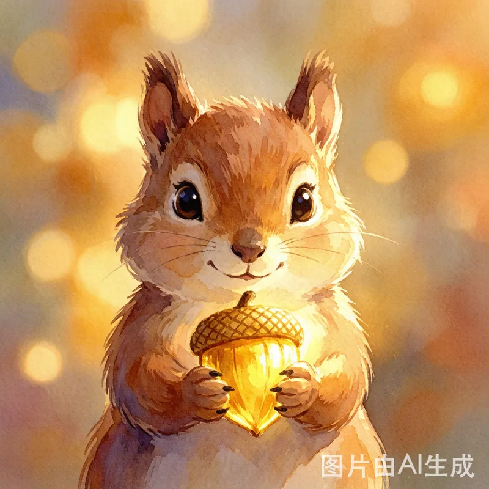
小松果咬了一口香甜的橡果，突然明白了什么。
"原来，"他小声对自己说，"最大的宝藏不是山谷里的坚果，而是愿意帮你搬坚果的朋友们呀。"